Habilidades Especiales
Habilidades
5Y - Flask of Hazards (Any)
Vista Previa - 5Y
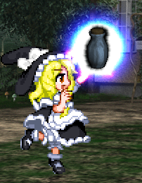| Damage Base | Frame Adv. | Descripción |
|---|---|---|
| 50 | +100 | Lanza un frasco explosivo al oponente. La explosión puede herir a ambos jugadores y golpea el suelo por la mitad del daño. |
22Y - Magical Reusable Bomb (Any)
Vista Previa - 22Y
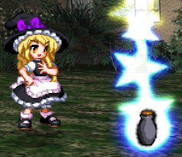| Damage Base | Frame Adv. | Descripción |
|---|---|---|
| 150 | +100 | Un frasco explosivo más fuerte que rebota por un tiempo antes de explotar. La explosión puede lastimar a ambos jugadores, no se puede proteger cuando no está en el aire y golpea el suelo por la mitad del daño. |
2Y - Makai Torch (Standing)
Vista Previa - 2Y
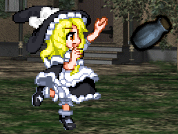| Damage Base | Frame Adv. | Descripción |
|---|---|---|
| 60 | +20 | Este ataque cubre un área grande con explosiones, pero el daño no es impresionante. |
26Y - Narrow Spark (Any)
Vista Previa - 26Y
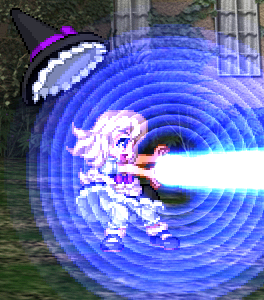| Damage Base | Frame Adv. | Descripción |
|---|---|---|
| 34 | +6 | Un ataque de rayo delgado de fuerza y velocidad medias. |
24Y - Stream Laser (Standing)
Vista Previa - 24Y
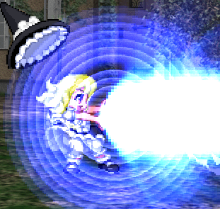| Damage Base | Frame Adv. | Descripción |
|---|---|---|
| 69 | +6 | Un haz más ancho y lento que hace más daño. |
5X - Meteonic Debris (Any)
Vista Previa - 5X
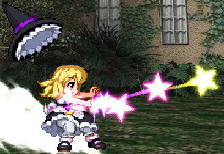| Damage Base | Frame Adv. | Descripción |
|---|---|---|
| 96 | +3 | Dispara múltiples proyectiles hacia adelante de forma dispersa. No muchos de ellos golpearán si el oponente está lejos. |
26X - Meteonic Fragments (Standing)
Vista Previa - 26X
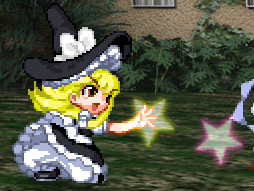| Damage Base | Frame Adv. | Descripción |
|---|---|---|
| 52 | +1 | Proyectiles rápidos y débiles que explotan a cierta distancia. El daño hecho en el área de explosión es mayor. |
22X - Meteonic Gust (Standing)
Vista Previa - 22X
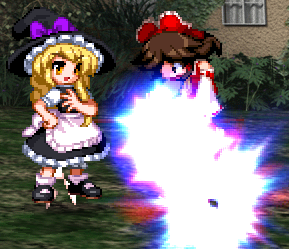| Damage Base | Frame Adv. | Descripción |
|---|---|---|
| 60 | +27 | Conjura una ráfaga de danmaku desde debajo del oponente. Es relativamente rápido pero el daño no es tan especial. Sin embargo, este ataque tiene marcos de invencibilidad contra ataques que no son hiperactivos. |
2X - Meteonic Rift (Standing)
Vista Previa - 2X
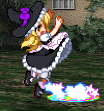| Damage Base | Frame Adv. | Descripción |
|---|---|---|
| 90 | +35 | Invoca un estallido más fuerte de danmaku justo en frente de ti que aturde bien. Este ataque también tiene marcos de invencibilidad contra ataques que no son spell cards ni de lanzamiento. |
24X - Meteonic Eruption (Standing)
Vista Previa - 24X
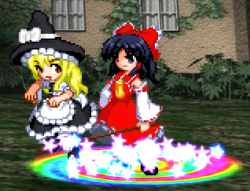| Damage Base | Frame Adv. | Descripción |
|---|---|---|
| 120 | +110 | Cubre un área más amplia más adelante con una explosión altamente dañina. Llega más alto en el aire pero hace menos daño allí que a las personas que tocan el suelo. Lleva tiempo activarlo y está limitado a uno a la vez. Solo se puede bloquear en el aire. Este ataque también tiene marcos de invencibilidad contra ataques que no son spell cards ni de lanzamiento. |
5C - Magic Missile (Any)
Vista Previa - 5C
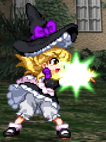| Damage Base | Frame Adv. | Descripción |
|---|---|---|
| 20 | +31 | Un proyectil que comienza lento pero acelera repentinamente para confundir al oponente. |
2C - Galactic Rain (Standing)
Vista Previa - 2C
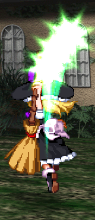| Damage Base | Frame Adv. | Descripción |
|---|---|---|
| 120 | +19 | Dispara 3 misiles hacia arriba que vuelven a caer. Hacen más daño cuando bajan. |